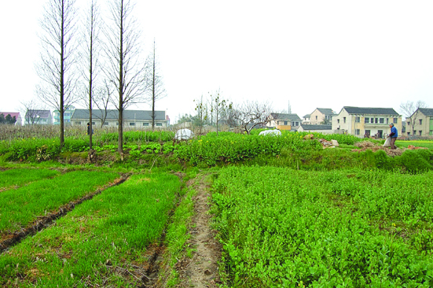

嘉兴市文物保护网 · 市级文物保护单位 · 2014-06-13 · 原文

梅园遗址位于嘉兴市南湖区凤桥镇栖柽村梅园，东、南至新篁社区，西至钱家队高亭寺，北靠余篁公路。遗址呈不规则形状，面积约38000平方米。现主要为村民种植桑树、油菜、雪菜等农作物，部分遗址处有村民盖的大棚，还有几座村民的坟墓。土墩背面为东西向水泥排水沟，南北两侧均已变为农田。地面上发现陶器碎片，印纹陶片纹饰有米字纹、方格纹、回字纹等，从采集的陶器标本可以判断为新石器时代良渚文化至春秋战国时期的聚落址。遗址分布面积较大，从三普实地发现的大量新石器时代的陶片看，具有较高的历史和科学价值。2009年公布为嘉兴市级文物保护单位。